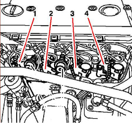
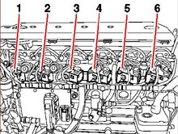
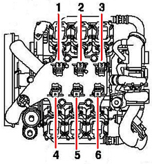
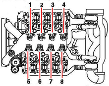

This function is used to enter new unit code and is used when replacing unit pump.
Read off the number on the unit pump and enter it as in the following example: 5-115-981-12-00613. Incorrect entry may lead to rough engine operation and overloading of individual cylinders. See figures below for unit pumps' cylinder placement.
R4: 904, 924
NO 1. Cylinder 1
NO 2. Cylinder 2
NO 3. Cylinder 3
NO 4. Cylinder 4

R6: 457, 906
NO 1. Cylinder 1
NO 2. Cylinder 2
NO 3. Cylinder 3
NO 4. Cylinder 4
NO 5. Cylinder 5
NO 6. Cylinder 6

V6: 501
NO 1. Cylinder 1
NO 2. Cylinder 2
NO 3. Cylinder 3
NO 4. Cylinder 4
NO 5. Cylinder 5
NO 6. Cylinder 6

V8: 502
NO 1. Cylinder 1
NO 2. Cylinder 2
NO 3. Cylinder 3
NO 4. Cylinder 4
NO 5. Cylinder 5
NO 6. Cylinder 6
NO 7. Cylinder 7
NO 8. Cylinder 8

Test conditions:
Parking brake applied.
Ignition on, engine off.
Battery voltage above 20 V.
Procedure:
Select cylinder for the unit pump to be programmed.
A dialogue box appears showing the test conditions. Check these.
A dialogue box shows "Do you want to enter new injector code". Press "Yes" to continue or "No" to cancel the function.
An entry window for the new code is shown, enter the new number and press "OK".
A dialogue box shows "Turn off ignition". Press "OK".
A dialogue box shows "Turn on ignition". Press "OK".
A dialogue shows "Function done". Press "OK".
The function is done.
If the function fails, check the test conditions and repair any faults.